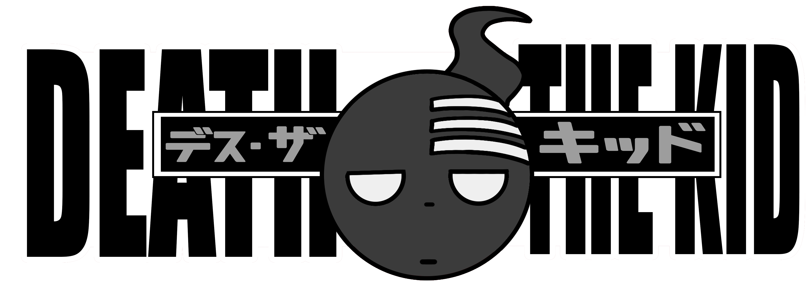

Death the Kid, commonly referred to as simply Kid , is the second son of Death himself and the Meister of the Demon Twin Guns, Liz Thompson and Patty Thompson. Created from a piece of Death himself, Death the Kid is known to be one of the top 3 EAT students in the DWMA.